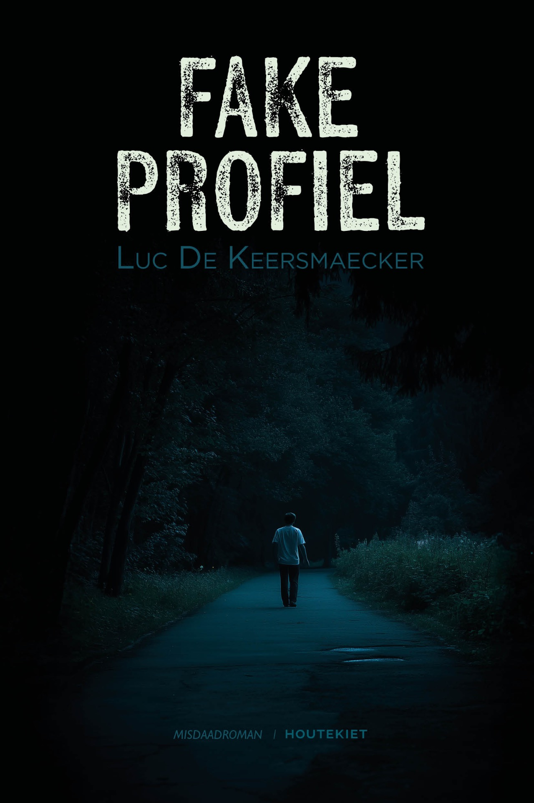

Een nieuwe misdaadroman van
Fake
Profiel
Sommige leugens blijven zelfs na de dood online.
Ontdek de romanCase ref.
24-317 / LDK
24-317 / LDK

Beschrijving:
Een dodelijk profiel. Een waarheid die niet gemonetiseerd kan worden.
Publicatiemei 2026
Journalistieke spanning, menselijke kwetsbaarheid en digitale sporen komen samen in een verhaal dat dicht op de huid zit.
Voor lezers die houden van misdaad, identiteit, twijfel en een onderzoek dat langzaam ontspoort.
Boekvoorstelling, reacties van lezers of contact met de auteur.
luc.keersmaecker@telenet.be